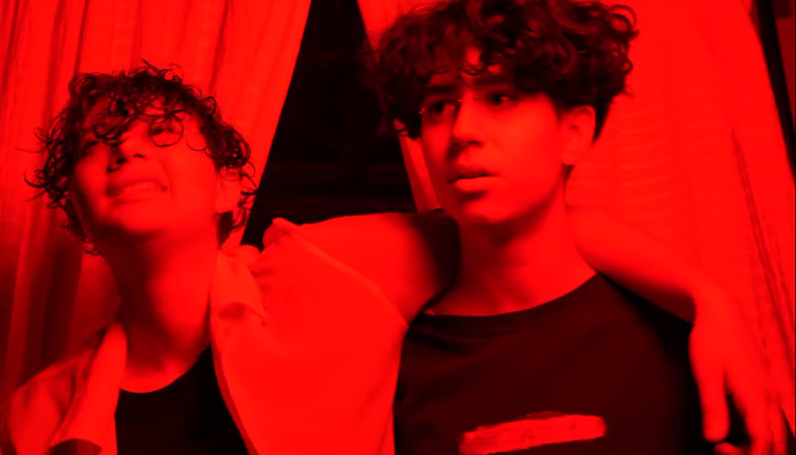

Direção de som · 2024
Teaser
Canto V
Trabalho de direção de som para o teaser de "Canto V"

- Categoria
- Diversos
- Função
- Direção de som
- Ano
- 2024
- Formato
- Teaser
Sobre o
projeto
Gravado em maio de 2024, este é o teaser de "Canto V". Nessa versão mais antiga, a história é de Fran e Paulo que passam pelos sete cantos do inferno de Dante em uma jornada de evolução.
Link do teaser ↗Ficha técnica
- Direção de som
- Julia Figueirôa
- Direção
- A definir
- Produção
- A definir
- Instituição
- FAAP